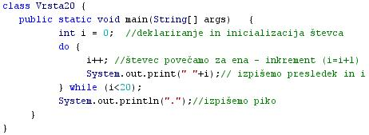

STRUKTURA PROGRAMA
- Struktura programa je zgradba programa.
- Struktura programa je naèin, kako si sledijo posamezne operacije oziroma opravila, ki jih mora program izvesti.
- Struktura programa je tudi naèin, kako so posamezne zapletene operacije, ki vsebujejo veè opravil, zapisane in urejene.
- Za strukturo programov z nizko stopnjo strukturiranosti je znaèilno enostavno zaporedje ukazov, ki izvajajo preproste operacije.
- Ukazi takih programov se izvajajo po vrsti eden za drugim in niso združeni v skupine ukazov, ki bi izvajali zapletena in sestavljena opravila.
- Strukture poteka so v enostavnih programih preproste. Delimo jih v tri velike znaèilne skupine:
- Sekvenca ali zaporedje - to je urejeno zaporedno izvajanje ukazov.
- Selekcija ali izbira - to je izvajanje doloèenih delov programa na podlagi odloèanja s pomoèjo pogojnih stavkov (stavki "if", "if-else", "switch").
- Iteracija ali ponavljanje - to izvajanje doloèenega ukaza ali sestavljenega ukaza, dokler ni izpolnjen nek postavljeni pogoj (zanke "while", "do-while" in "for").
- Programski jezik je blokovno strukturiran, èe vsebuje njegova sintaksa tudi posebne simbole za združevanje stavkov in oznaèevanje zaèetka in konca zakljuèenega zaporedja ukazov, ki predstavlja sestavljeni stavek ali blok ukazov (zavita oklepaja "{" in "}").
- Blokovno strukturirani programski jeziki vsebujejo tudi ukaze, ki oznaèujejo zaèetek in konec zaporedja stavkov, ki predstavljajo neko zaokroženo funkcionalno ali logièno celoto (ukazi "begin" in "end").
- Primer:
- Besedni opis problema in rešitve.
- "Zapiši po vrsti števila od 1 do 20 v isti vrsti, med njimi pa naj bo en presledek": Vprašamo se, kaj vse bomo morali postoriti za rešitev problema in to opišemo v nekaj stavkih. Potek reševanja problema poskusimo premisliti èim bolj natanèno.
- Ker gre za ponavljanje, bomo izbrali zanko.
- Zaèetna vrednost števca zanke je 0.
- Poveèaj vrednost števca za 1.
- Izpiši presledek in vrednost števca.
- Èe bo števec manjši od 20, poveèaj števec za 1 ter ponavljaj izpisovanje presledka in števca.
- Èe števec ni manjši od 20, prekini zanko in izpiši še piko.
- Diagram poteka
- "Zapiši po vrsti števila od 1 do 20 v isti vrsti, med njimi pa naj bo en presledek":
VAJA 37:
- V okolju za pisanje izvorne kode v jeziku Java, za prevajanje in za interaktivno delo zapiši zgornji program "Vrsta20". Pomagaj si s sliko.
- Kodo lahko tudi kopiraš iz te datoteke in jo prilepiš v okolje, v katerem pišeš programèke. Pozor: koda, ki jo boš kopiral/a, vsebuje eno, dve, tri ali štiri napake. Èe želiš, da bo program deloval, moraš napake odkriti in jih odpraviti.
- Izvorno kodo shrani pod imenom "ImePriimek37.java". ImePriimek je seveda tvoje lastno ime in priimek.
- Datoteko "ImePriimek37.java" prevedi.
- Prevedeno datoteko zaženi, preveri rezultat v interaktivnem oknu in poklièi profesorja, da vidi rezultat.
- Preriši diagram poteka v tej uèni enoti v zvezek.
1. Vprašanja:
1. Kaj je struktura programa?
2. Katere tri znaèilne strukture preprostih programov poznamo? Zapiši njihove nazive s tujkami in s slovenskimi nazivi.
3. Kaj znaèilnost sekevence?
4. Kaj je znaèilnost selekcije?
5. Kaj je znaèilnost iteracije?
6. Kaj mora vsebovati blokovno strukturiran jezik?
7. Ali je Java tudi blokovno strukturiran jezik? Utemelji odgovor.
8. Katero od osnovnih struktur programov smo uporabili v primeru te uène enote?
9. Kateri dve metodi za izpis smo uporabili v primeru te uène enote?
10. Zakaj smo morali uporabiti dve razlièni metodi za izpis v primeru v tej uèni enoti?
11. Zapiši ukaza, ki ju vsebuje zanka na diagramu poteka v tej uèni enoti.
12. Zapiši pogoj, ki doloèa izvajanje zanke na diagramu poteka v tej uèni enoti.
2. Zapiši od ene do pet kljuènih besed, ki povzemajo vsebino te uène enote.
3. Povezave do dodatnih informacij.
Gradiva na spletnih straneh fakultete za matematiko in fiziko v Ljubljani: Metode v jeziku Java
Angleška verzija Wikipedije.
|